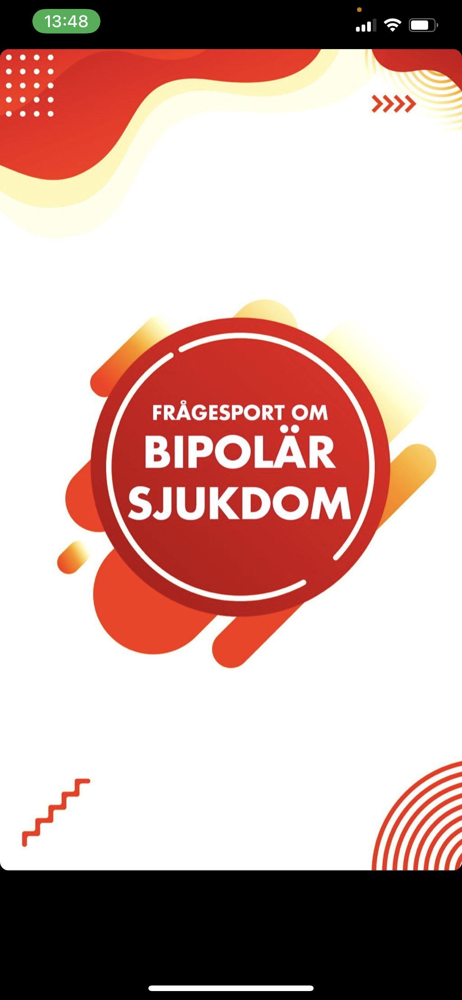
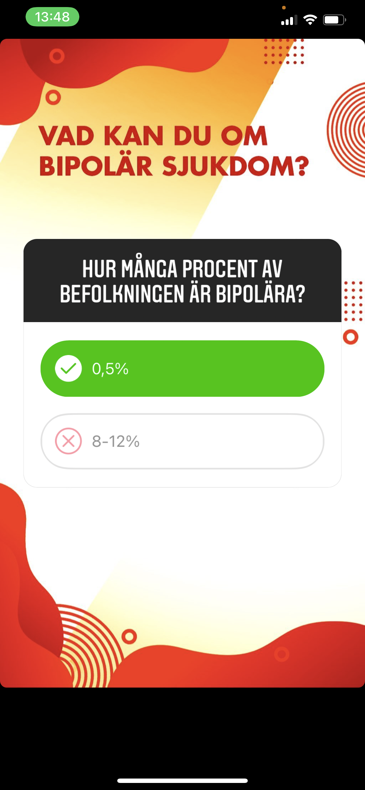
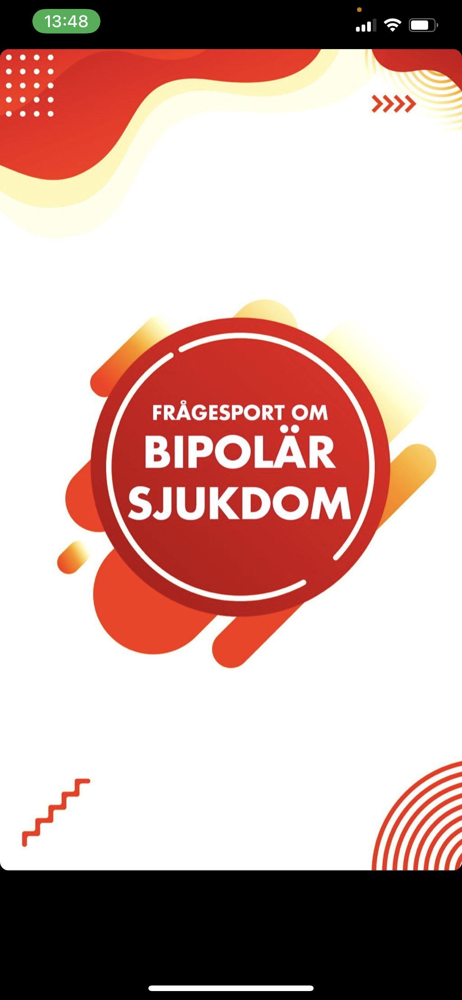
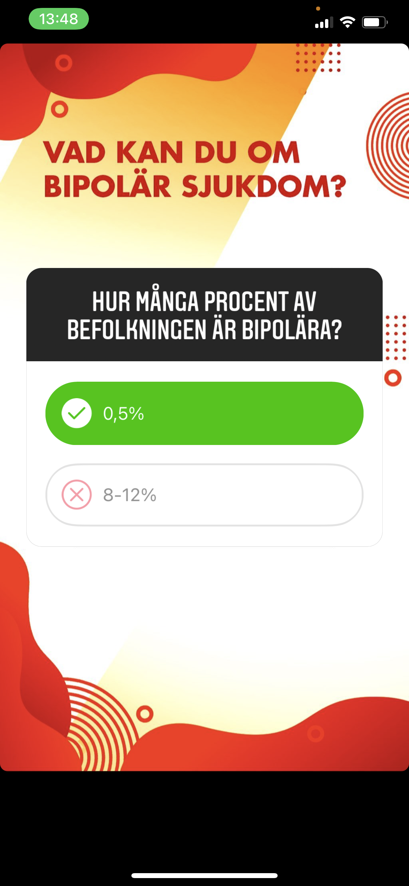

Våga Prata
Hired: March 2020 to November 2020
Softwares: Wordpress, MS Office, Adobe Photoshop, Illustrator
Role: Project assistant
About
Våga Prata is a project founded by the organization Hjärnkoll Stockholm aiming to spread awareness about mental health among teenagers and young adults. Våga Prata is a safe space for young people struggling with mental illnesses or different types of diagnoses to share their story and find comfort in not being alone in their struggles.
My contributions
● Held interviews and wrote texts together with the people telling their stories.
● Created all posts and stories for social media platforms.
● Coached people sharing their stories and set schedueles for interviews and story posting.
● Was in charge of all publications on the website.


 



Similar Projects